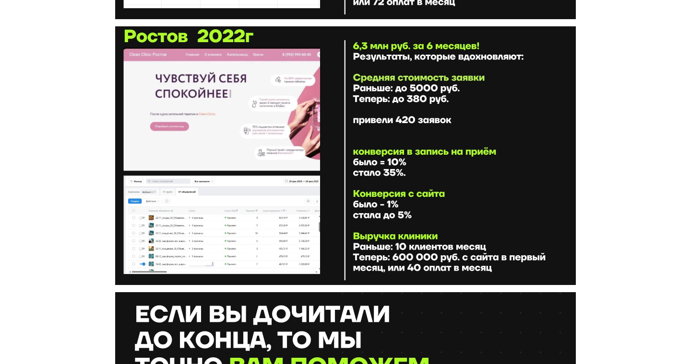
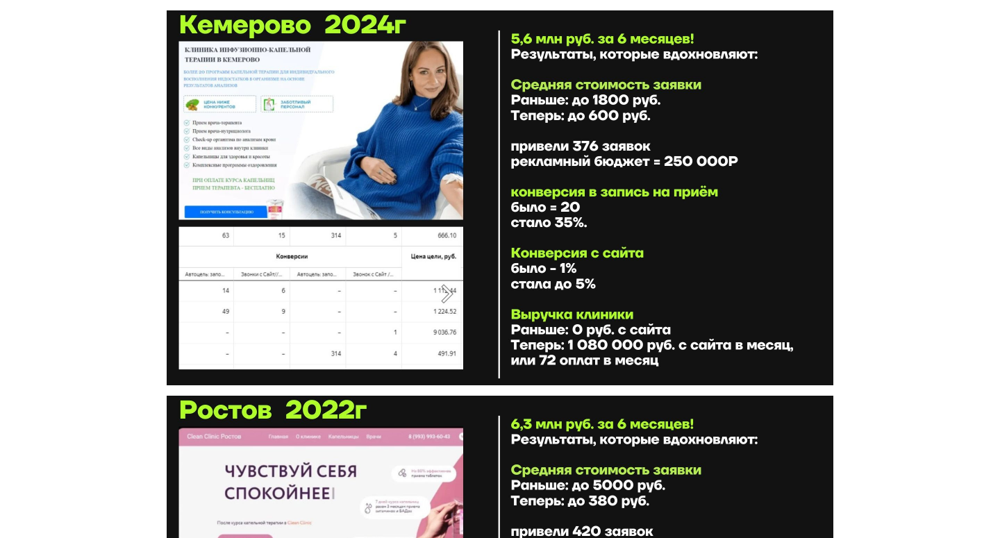
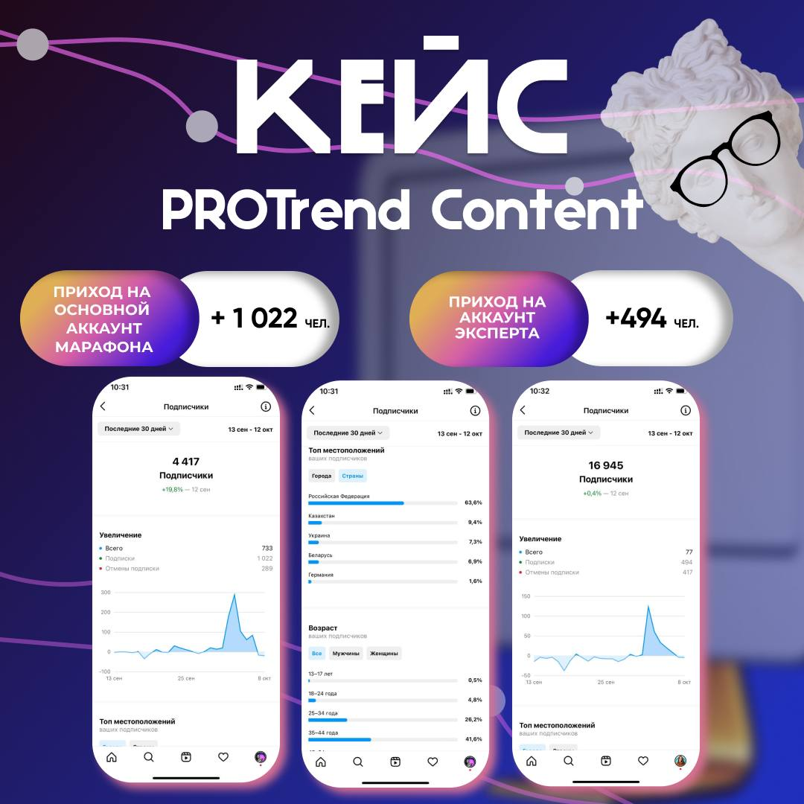
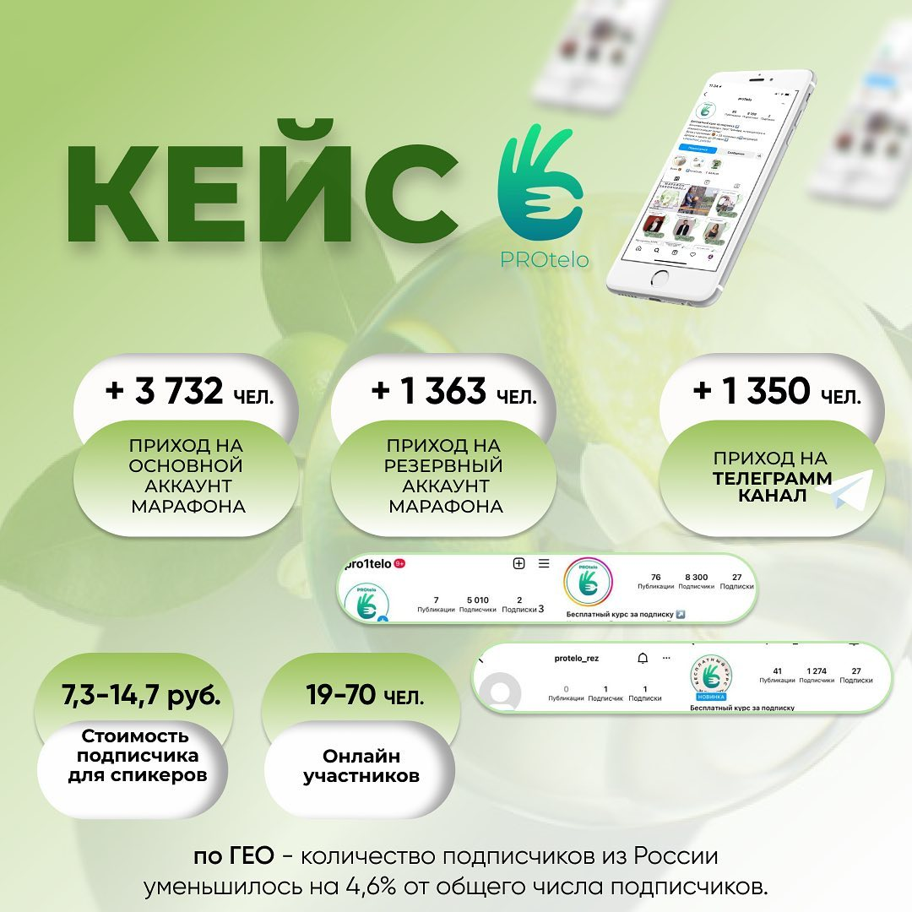
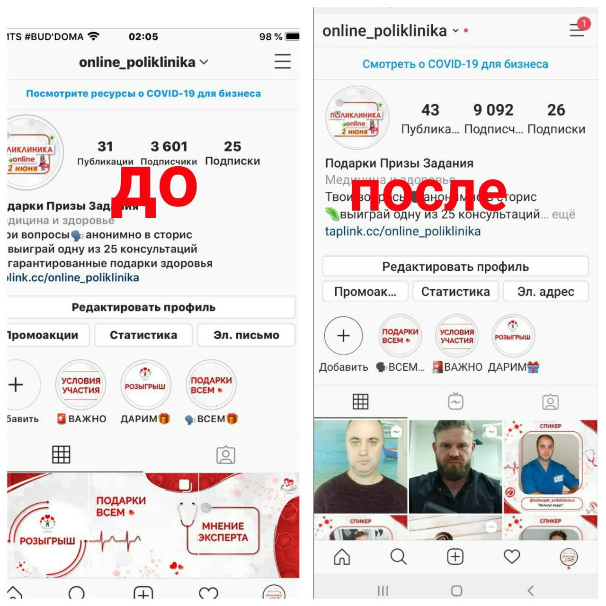
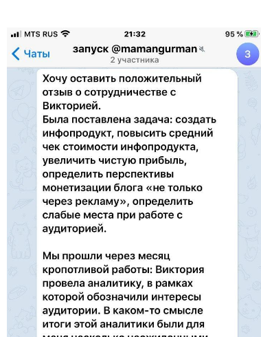

Сквозная аналитика: стоимость пациента снизилась с 50 000 ₽ до ≈1 100 ₽
Задача бизнеса. Реклама работала «вслепую»: клиники не знали, какой канал приводит пациентов, а какой только пустые заявки. В Ростове заявка стоила 5 000 ₽, до записи доходили 10%, то есть каждый новый пациент обходился в 50 000 ₽ при среднем чеке 15 000 ₽. Реклама работала в минус.
Воронка клиники в Ростове за месяц
Ширина полосы условная, для читаемости. факт расчёт
Юнит-экономика до и после
| Показатель | Ростов до | Ростов после | Кемерово до | Кемерово после |
|---|---|---|---|---|
| CPL, цена заявки | 5 000 ₽ | 380 ₽ | 1 800 ₽ | 600 ₽ |
| Заявка → запись | 10% | 35% | 20% | 35% |
| CAC пациента = CPL / CR | ≈50 000 ₽ | ≈1 086 ₽ | ≈9 000 ₽ | ≈1 714 ₽ |
| Пациентов в месяц | — | 40 | — | ≈72¹ |
| Рекламный бюджет / мес | — | ≈43 400 ₽ | — | ≈123 400 ₽ |
| Выручка / мес | — | 600 000 ₽ | — | 1 080 000 ₽ |
| ROMI по выручке | −70% | ≈1 280% | — | ≈775% |
¹ При среднем чеке как в Ростове, 15 000 ₽ (600 000 ₽ / 40 оплат). CPC — оценка при конверсии сайта в заявку 4%, типичной для медицинских лендингов.
Путь пациента и стек
Команда и управление
- Наняла и вела подрядчиков: специалист по VK Ads и Яндекс Директу, интегратор CRM и коллтрекинга, копирайтер для статей и постов.
- Писала ТЗ, принимала работу по чек-листу, держала недельные спринты с отчётом по CPL и записи.
- Обучила администраторов новым скриптам и бандлам услуг, сверяла записи с CRM.
Сроки и первые эффекты
Доказательства


«Цена заявки упала почти в 3 раза, а запись выросла с 20% до 35%. Впервые видим прозрачную воронку от клика до оплаты». Медицинский центр, Кемерово
Полный кейс →Автоворонка в Telegram: 8,6% входов становятся лидами при норме 3,5%
Задача бизнеса. Сообщество IT-менторов (32 000 человек) продаёт дорогое сопровождение с оплатой после трудоустройства. Нужны не подписчики, а квалифицированные лиды из холодной аудитории.
Воронка
Каналы
| Канал | Бюджет | Входы | Цена входа | CPM |
|---|---|---|---|---|
| Сторис блогеров в Instagram | 5 000 ₽ | 19 | 263 ₽ | 6 250 ₽ |
| Рассылки в Telegram-ботах | 58 000 ₽ | 75 | 773 ₽ | 200 ₽ |
| Посты в Telegram-каналах | 182 348 ₽ | 172 | 1 060 ₽ | 3 513 ₽ |
Вывод для бюджета: рассылки в ботах дали 85% охвата за 24% денег, Instagram — самый дешёвый вход. Следующий рубль клиент вложил туда.
Стек
Команда и управление
- Написала ТЗ для Python-разработчика бота: 12 состояний пользователя, 19 триггеров, поля базы данных. Принимала по сценариям, повторный старт не сбрасывает прогресс.
- Договорилась с 18 площадками и выбила скидку 16 177 ₽ от прайса. Сверяла выход постов с почасовой аналитикой.
- Написала инструкцию менеджеру по лидам: 5 шагов подбора и готовые ответы под 5 профилей.
Сроки и первые эффекты
«Психология денег»: 1 016 лидов по 27–41 ₽, четверть дошла до экспертов
Задача бизнеса. Собрать базу для марафона экспертов и не потерять людей на прогреве, где раньше был основной отток.
Воронка
Стек
Команда и управление
- Вела закупку у админов каналов и таргет, ставила задачи дизайнеру креативов, согласовывала расписание эфиров с экспертами, сдавала отчёт заказчику по дням.


«Онлайн-поликлиника»: 7 715 подписчиков по 2,2–5,2 ₽ при рынке 150–300 ₽
Задача бизнеса. Врачам-экспертам нужен поток целевой аудитории, а подписчик через таргет в медицинский блог стоил 150–300 ₽.
Воронка
Стек
Команда и управление
- Собрала и координировала врачей-спикеров, дизайнера, разработчика бота проверки подписок и модераторов. Отвечала за план эфиров и сроки запуска.

20 000 ₽ рекламы → 120 000 ₽ выручки за 7–10 дней
Задача бизнеса. Долгий цикл сделки и дорогой холодный трафик: реклама окупалась месяцами.
Решение: недорогой входной продукт окупает трафик сразу, а основной продукт продаётся уже тёплой базе. Каждый рубль рекламы возвращается в 6 раз за полторы недели.
Исследование аудитории → новый продукт: 290 000 ₽ за 3 дня
Задача бизнеса. Чек 190–290 ₽ и уставшая база: блог не приносил денег.
Воронка
Команда и управление
- Вела команду запуска в общем чате: блогер, дизайнер, технический специалист по оплатам и рассылке. Запуск за 3 дня по согласованному плану.

«За 3 дня сделали выручку, на которую раньше уходил месяц. Средний чек вырос в 7 раз». @mamangurman
Методика расчётов
- CPL — цена заявки или лида: бюджет / количество лидов.
- CAC — цена клиента: CPL / конверсия лида в оплату.
- Бюджет, если его не было в отчёте: CPL × количество лидов.
- ROMI по выручке — (выручка − рекламный бюджет) / бюджет. Без учёта себестоимости услуг.
- CPC и клики — оценка при типичной конверсии сайта в заявку для ниши, указана рядом.
Аналитика: Яндекс Метрика, Google Analytics, пиксель Meta, UTM и deep-link, коллтрекинг, CRM, дашборды в Google Sheets.
Посчитаю вашу воронку так же
За 30 минут покажу, на каком этапе теряются клиенты и сколько это стоит в деньгах.
Написать в Telegram →viktoria.shet@gmail.com